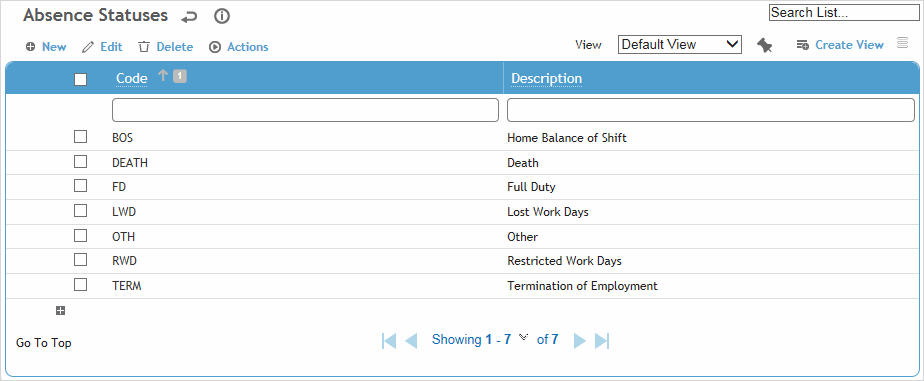
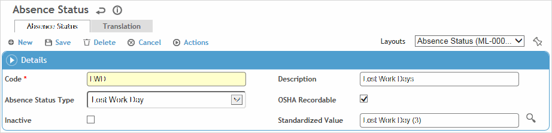

This table allows you to enter multiple absence statuses, and relate them to an absence type for counting purposes.
To filter the list of records, enter a few characters in one or more of the fields at the top followed by an asterisk, then press enter.

Click a link to edit a record, or click New to add a new record.

Enter a Code and Description for the absence status.
Select the Absence Type; this dictates how the absence is counted.
Indicate if this absence status is OSHA Recordable.
Optionally, select the Standardized Value (from the AbsenceStatusStandardizedValue look-up table) to categorize this record. This value will be used by the predictive Analytics module to compare your data to that of other organizations and determine your relative performance.
Click Save.